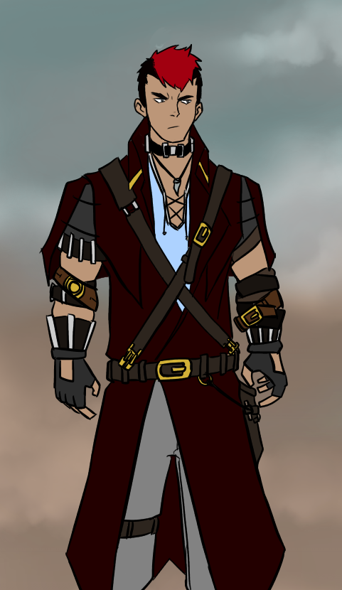

Magisters Project
NOTE: Anything in brackets will be replaced laterBackground Information
Protagonists
Len
The brains of the team. He is incredibly frail due to a disease contracted in his infancy. To make up for this, he had tried to prove his worth by going into the mines. After hours of exploration, Len found a small underground workshop containing shards of a strange glowing crystal and the remains of a long dead mage. However, every competent mage wards his workshop, and taking a crystal shard had triggered magic wards. The security measures caused a cave in that resulted in him losing both his arm and his beloved dog, though he escaped with the shard.
Amadeus
An exiled mage who seeks to prove his heritage. He's really an easy going guy, if a bit cocky. NOTE: Don't let him cook, he burns water.
Bobert
An eccentric mage with a progress tracking ability. Also the mad scientist (well, he's actually an alchemist but "mad alchemist" doesn't sound as nice) and comic relief of the team.
Cog
That guy who knows a guy who knows a guy who knows a girl who knows a person that can get you the stuff you need. Bobert's best friend and his voice of reason.
Eliza
A former member of the revolution. She left because her partner Tiffany was resorting to extreme measures( like allying with a bandit group that routinely terrorizes and raids your nation. What are you even doing, Tiffany?). Has a scar on her neck that damaged her larynx.
K9
Len's robot dog. There's always a dog in the party.
Antagonists

Dave
Leader of the Ravager clan in the Wasteland. He is widely known for his code of honor, strict policies, and his flying ship.Hans
A major player in the Wasteland, "Sharkface" Hans is a vicious man prone to raiding and terrorizing settlements to prove his superiority. His immense strength and success has united half the bandit tribes under the banner of the Sharkface clan.
Tiffany
Insists on being called Tif. A revolutionary allied with Sharkface, he aims to prevent Sebastien's conspiracy against the oligarchy. His cybernetics and specialization in electronical warfare made him a serious threat to both [tech world] and Sebastien's plans. Fun Fact: He got that name when he lost a poker game (and this is why you don't play with high stakes). His birth name is Andrew.
Sebastien Villeneuve
Current dictator of [insert name for tech world]. Known for his abrupt and bloody rise to power, he is greatly feared among his people(mostly the members of the former ruling class rather than the civilians, since he publicly executed the former chairman)
Khown
Grandmaster of the Magistrate. He is seen as the benevolent and efficient leader of [magic world name] and greatly respected by the people. However, he is secretly a cruel and hypocritical dictator that utterly crushes and censors any possible threats to his power, whether external or internal. (Really, with the amount of bloodlines he's exterminated, he should have been overthrown by now. This guy's PR team is good.)